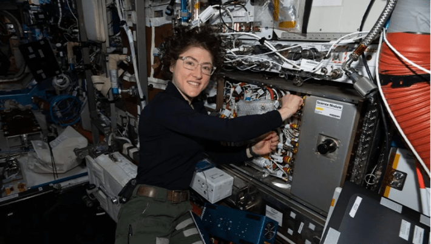
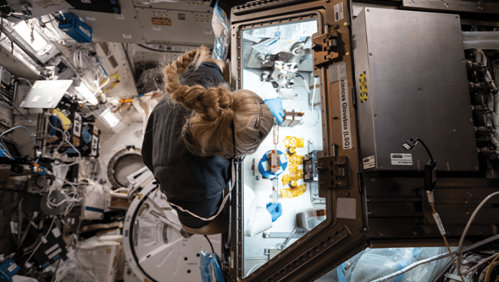
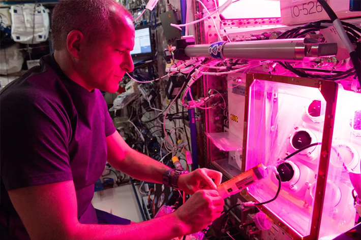

The International Space Station recently celebrated a cosmic milestone—hosting space travelers non-stop for a quarter of a century. In 1998, the ISS was launched as a state-of-the-art research facility among the stars. Since then, the station has welcomed more than 280 people from 26 countries, along with butterflies, rodents, and fruit flies, among other creatures.
While aboard, astronauts have conducted thousands of studies, from tracking space’s effects on the human body to exploring the bizarreness of the quantum realm. Here are some of the most importantfindings that emerged aboard the ISS, benefiting both space exploration and our terrestrial lives.

SUPER CRYSTALS: Researchers are growing crystals on the ISS to boost drug development. Photo by JAXA.
The microgravity in the orbiting ISS offers a unique opportunity for drug development, researchers on the space station have learned. On Earth, gravity can hinder the precise processes involved in growing intricate protein crystals within life-saving drugs. In space, these can grow more evenly, and often bigger. Pharmaceutical companies have collaborated with scientists aboard the ISS to take advantage of these conditions. For example, experiments with the cancer drug pembrolizumab on the ISS illuminated ways to improve the medication’s production on Earth, enabling it to be delivered as an injection—rather than a slow intravenous transfusion—to make life easier for patients and caregivers.

SUPER COOL: NASA astronaut Christina Koch working on the Cold Atom Lab on the International Space Station. Photo by NASA.
In the mini fridge-sized ISS Cold Atom Lab, scientists concocted the strange fifth state of matter—Bose-Einstein condensates, which were first glimpsed in 1995 but predicted by Albert Einstein and Satyendra Nath Bose a century ago. In this form of matter, super cold clouds of atoms “coalesce, overlap and become synchronized like dancers in a chorus line,” according to NASA. These frosty atoms—as chilly as one ten billionth of a degree above absolute zero—are easier to study in space, without the influence of terrestrial gravity. “Waves” of Bose-Einstein condensates could eventually power instruments that pick up signals from mysterious phenomena such as dark energy and gravitational waves.

BODIES IN SPACE: NASA astronaut Kate Rubins works with tissue chips that mimic the heart. Photo by NASA.
Much work on the ISS probes a critical question: How do human bodies fare over long periods spent in microgravity? Scientists aboard the space station have gleaned plenty of insights over the past two decades. For example, one study compared astronaut Scott Kelly’s health as he spent nearly a year aboard the ISS to that of his twin Mark Kelly on Earth. Scott’s body mass shrank by 7 percent, his eyeball shape shifted, and he experienced changes in gene expression, among other findings reported by NASA in 2019. For a closer look at the impacts of spaceflight on individual organs, researchers have created chips that incorporate living cells to “mimic complex functions of specific human tissues and organs.” Close study of these chips aids in the hunt for drugs that can reduce the adverse health effects of prolonged space travel, and these insights could also inform the treatment of age-related conditions on Earth.

SPACE PLANTS: Canadian Space Agency astronaut David Saint-Jacques testing the Passive Orbital Nutrient Delivery System. Photo by NASA.
If we’re going to send people on increasingly lengthy missions to the moon and beyond, they’re going to need some grub. Since 2015, NASA scientists have been developing the Passive Orbital Nutrient Delivery System, which was tested on the ISS. This is a passive set-up that doesn’t require any electricity. Water and nutrients continuously flow into plants through a capillary-like wicking material, resulting in growth that could offer a steady supply of healthy produce for cosmic explorers. Water is also a critical resource for spacefarers—to guarantee astronauts have a steady supply, NASA has recovered drinking water from astronauts’ pee on the ISS. 
EnjoyingNautilus? Subscribe to our freenewsletter.
Lead image: NASA